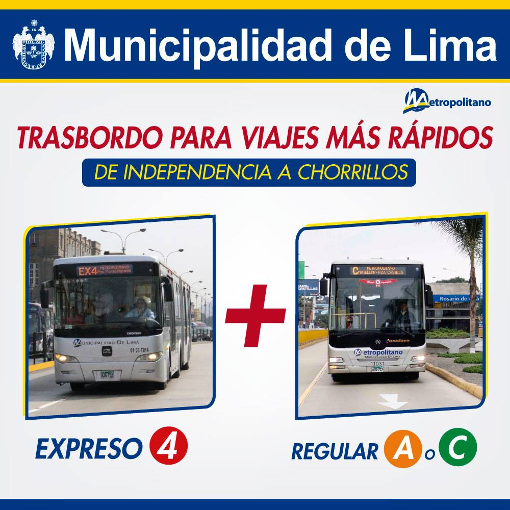

¿Estás preparado para cambiar tu
forma de viajar en el
metropolitano?
Descargalo para PlayStore Descargalo para AppStoreSobre Nosostros
InfoMetro, es un negocio pensado para solucionar el problema que tienen muchos usuarios del metropolitano. Podrás saber en tiempo real la ubicación y llegada de los buses, el tipo de ruta que hace el bus más próximo y la cantidad de personas dentro de las estaciones. Por este motivo, la finalidad principal de la aplicación es hacer el viaje en metropolitano una experiencia mas rapida y menos riesgosa. Además, se brindarán sugerencias sobre cuáles son las mejores rutas. Por otro lado, el aplicativo contará con un amplio portal informativo dirigido especialmente para aquellas personas que recién están empezando a hacer uso de este servicio. Todo ello con el objetivo de mejorar la experiencia de los usuarios que diariamente viajan en el Metropolitano y/o para incentivar a aquellos que nunca han hecho uso de este servicio como medio de transporte.
Rutas
El corredor Metropolitano cuenta con dos tipos de rutas: Las rutas normales, que son rutas que se detienen en todas las estaciones que abarca su punto de inicio y su punto final; y los expresos, rutas que solo se detienen en algunas estaciones y pasan de largo otras. En InfoMetro te daremos la ruta mas rapida y conveniente para que optimices tu tiempo y evites confusiones al momento de abordar un bus.
-
Partida
El punto de partida es importante en la ruta que tomes, ya que hay estaciones que son mas grandes y son paradas del bus que mas te conviene.
-
Buses
InfoMetro te dara la ruta mas optima para llegar a tu destino, por lo que, a demas de mostrarte las mejores estaciones, tambien te mostraremos que bus es el adecuado y la ruta que realiza.

Estaciones
El corredor troncal del Metropolitano cuenta con 38 estaciones. A la ya conocida Estación Central (Centro de Lima) debemos agregar a otras dos importantes: los terminales Naranjal y Matellini, los cuales todos los dias reciben a una gran cantidad de pasajeros. En MetroFast te mostraremos las estaciones mas cercanas a tu ubicación y las menos aglomeradsas para un viaje menos pesado, peligroso y abrumador.
-
Información
En InfoMetro te mostraremos que tipos de buses parten y se detienen en cada estación, además de la dirección, las avenidas que cruzan y los distritos en los que se encuentra cada estación.

Buses
El corredor Metropolitano es un servicio que cuenta con 17 recorridos entre las rutas normales y expresos. Sus recorridos cubren un área desde el cono norte (Comas) en el Terminal Naranjal, hasta el cono sur (Chorrillos) en el Terminal Matellini. En InfoMetro te mostraremos que buses se detienen en la estacion deseada de manera mas rápida.
-
Horarios
Los buses del metropolitano cuentan con horarios establecidos de circulacion de cada bus.
-
Paradas
No todas las estaciones son paraderos de todos los buses, cada bus tiene un recorrido distinta de ida y vuelta y las estaciones en las que se detiene son diferentes a las de otros buses.